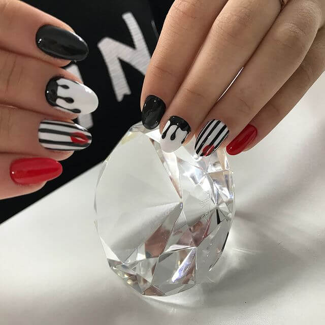
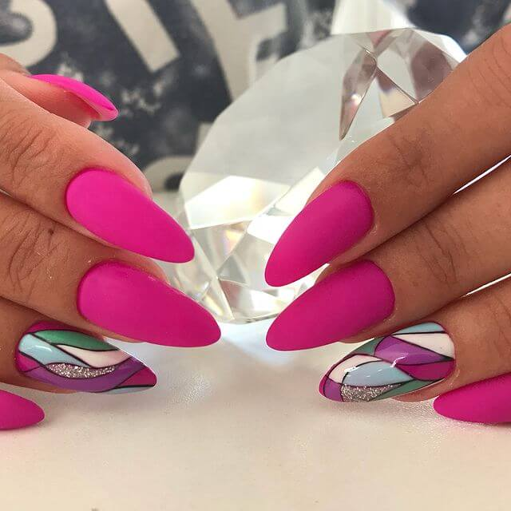
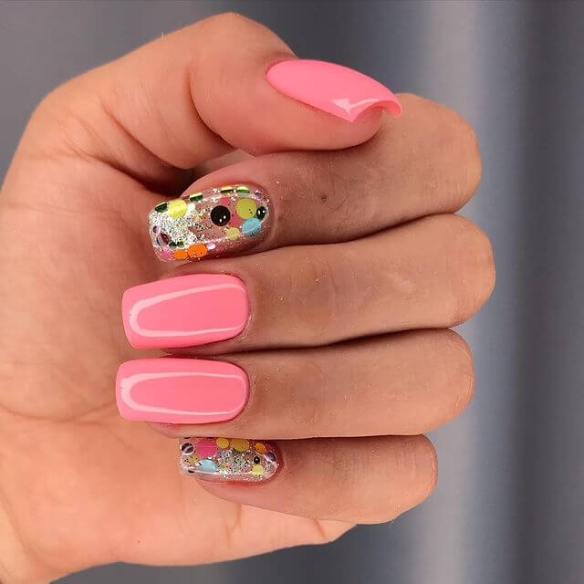

Рады представить вашему вниманию работы нашего мастера Карины
«Все в ваших руках. Поэтому они должны быть в полном порядке» — Coco Chanel
Поход на маникюр – это релаксация, возможность приятно провести время в салоне красоты «Карина Сан». Здесь вы сможете максимально расслабиться за чашечкой хорошего кофе или вкусного чая. Обсудить все новости, снять стресс, выговорившись от души. Здесь вас услышат и поймут.




Маникюр – это не только эстетика, но и здоровье, так как он включает: массаж рук, увлажнение кожи, лечение кутикулы. Такие процедуры заметно продлевают молодость кожи рук, делая ее более ухоженной и нежной. Регулярный массаж рук, включенный в процедуру маникюра, оказывает общее оздоровительное воздействие, так как на кончиках пальцев находится множество активных точек, которые стимулируют работу различных органов и систем человеческого организма.